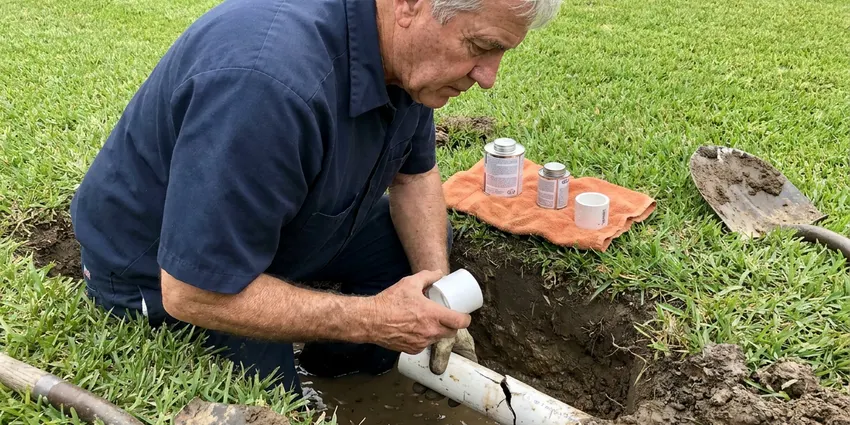

Repipe Specialists in Texarkana, TX
For reliable repiping services in Texarkana, TX, trust DFJ Plumbing. We replace outdated plumbing with high-quality materials, ensuring clean water and strong pressure.
- Fast, Free Estimates
- Licensed & Insured
- Durable Pipe Materials
- Long-Term Solutions

Ready for New Pipes and Peace of Mind in Texarkana, TX?
Don't wait for a plumbing emergency, invest in your home's future with a full repipe.
Your Local Repipe Specialists in Texarkana, TX for Modern, Reliable Plumbing
At DFJ Plumbing, our repipe specialists in Texarkana, TX are committed to upgrading your home's entire water delivery system. We meticulously remove existing problematic pipes and install durable replacements like PEX or copper, ensuring improved water quality, pressure, and the elimination of costly leaks. This investment protects your property and enhances daily living.
Our expertise includes:
- Whole-home PEX and Copper repiping expertise.
- Foundation leak detection and repair for slab-on-grade homes.
- Adherence to all Texas plumbing codes and local Texarkana regulations.

Additional Plumbing Maintenance Services in Texarkana, TX
Our maintenance and specialty plumbing services in Texarkana, TX protect your home year-round and extend the life of every system.


Customers
Why Choose DFJ Plumbing for Repipe Specialists in Texarkana, TX?
Choosing the right repiping contractor prevents future headaches and ensures your home's value. Our specialized knowledge in Texas plumbing systems makes us the ideal partner.
- Texas Experience, We know how Texas's unique climate and soil conditions, like expansive clay, affect your plumbing, leading to more frequent slab leaks and pipe corrosion.
- Code Compliance, Every repipe project strictly adheres to current IPC and local Texarkana plumbing codes, guaranteeing safety and legality.
- Material Choices, We offer and expertly install both PEX and copper piping, helping you choose the best material for your home's specific needs and budget.
Citywide Coverage
DFJ Plumbing proudly serves every neighborhood in Texarkana, providing expert repiping services wherever you are located. Our local teams are familiar with the various housing styles and common plumbing issues across the entire metropolitan area.
Experienced Team
Our repipe specialists at DFJ Plumbing are highly trained and experienced in whole-home plumbing replacements. They understand the intricacies of working within existing structures, minimizing disruption while maximizing the efficiency and quality of the new plumbing system.
Safety-First Approach
Beyond physical safety, we ensure all repiping work meets or exceeds local Texarkana and state plumbing codes. This commitment to compliance means your new plumbing system will be safe, reliable, and pass all necessary inspections, protecting your family and your investment.
Trusted Certified Texarkana Plumbing Services Professionals
At DFJ Plumbing, we take pride in providing licensed, certified plumbing services throughout Texarkana, TX. Backed by leading industry credentials, our experienced plumbers combine technical skill with genuine customer care. Whether it is repair, installation, or maintenance, we follow strict safety and quality standards to deliver lasting results you can trust.
Call Us Now PHCC Plumbing Contractor Recognition
PHCC Plumbing Contractor Recognition Better Business Bureau (BBB) Accreditation
Better Business Bureau (BBB) Accreditation Angi Certified Pro
Angi Certified Pro ISO 9001 Quality Management Certification
ISO 9001 Quality Management CertificationReliable Repipe Specialists Services in Texarkana, TX
Whole-Home Copper Repiping in Texarkana
Copper piping offers exceptional durability, corrosion resistance, and a long lifespan, making it a premium choice for many homeowners in Texarkana. While the upfront cost is higher than PEX, copper provides superior rigidity and resistance to UV light if exposed. Our team meticulously solders each joint, ensuring a leak-proof and robust plumbing system that can withstand the test of time, including Texas's variable temperatures and water conditions. Copper also naturally inhibits bacterial growth, contributing to cleaner water.

Efficient PEX Repiping in Texarkana, TX
PEX (cross-linked polyethylene) is a flexible, cost-effective, and highly popular choice for repiping projects in Texarkana, TX. Its flexibility allows for fewer connections, reducing potential leak points and making installation quicker and less intrusive than traditional rigid pipes. PEX is also highly resistant to freezing, scaling, and chlorine, common issues in Texas water. We use high-quality PEX-A or PEX-B tubing, installed with durable crimp or expansion fittings, to create a reliable and efficient plumbing network throughout your home.
Slab Leak Repiping Solutions in Texarkana
Slab leaks are a frequent and damaging problem for homes built on concrete foundations in Texarkana. These leaks often require rerouting or repiping entire sections of your plumbing system to bypass the compromised pipes under the slab. Our repipe specialists use advanced detection tools to pinpoint slab leaks and then strategically reroute new PEX or copper lines through your attic or walls, completely bypassing the problematic underground sections. This prevents further foundation damage and restores water service without breaking your slab.
Galvanized Pipe Replacement in Texarkana, TX
Many older homes in Texarkana, TX still have galvanized steel pipes, which are prone to corrosion, rust, and mineral buildup. This leads to low water pressure, discolored water, and eventual leaks. Our team specializes in the complete removal and replacement of these outdated systems with modern PEX or copper piping. This upgrade not only resolves existing issues but also significantly improves water quality and flow, boosting your home's value and plumbing reliability for decades to come.
Residential Repiping Experts in Texarkana
For any residential property in Texarkana experiencing plumbing issues due to old, failing pipes, DFJ Plumbing offers tailored repiping services. We assess your home's specific needs, considering factors like water pressure, family size, and future expansion plans, to recommend the best repiping strategy. Our goal is to provide a durable, efficient, and code-compliant plumbing system that enhances your home's comfort and prevents future plumbing emergencies, ensuring a reliable water supply throughout your property.
Commercial Repiping Services in Texarkana, TX
Commercial properties in Texarkana, TX have unique demands for their plumbing systems, often requiring larger pipe diameters and more complex layouts. DFJ Plumbing provides specialized commercial repiping services to ensure your business operates smoothly without plumbing interruptions. We understand the importance of minimal downtime and work efficiently to upgrade your facility's water lines with robust materials like copper or high-grade PEX, meeting all commercial building codes and operational requirements.
Emergency Repipe and Leak Repair in Texarkana
While a full repipe is a planned project, sometimes a major pipe burst or multiple severe leaks can necessitate immediate action. Our repipe specialists in Texarkana are equipped to handle emergency situations, providing temporary fixes and assessing the need for a more comprehensive repiping solution. We can quickly isolate damaged sections and offer options for immediate repair or a phased repiping approach to restore your water service safely and efficiently, preventing extensive water damage.

Cost-Effective Repiping Comparisons in Texarkana, TX
Understanding the cost implications of repiping is crucial for homeowners in Texarkana, TX. We provide transparent comparisons between PEX and copper repiping options, detailing material costs, labor, and expected lifespan. PEX is generally more affordable for materials and installation, while copper offers a premium, long-lasting solution with excellent resale value. Our estimates include all necessary permits, fittings, and cleanup, ensuring you have a clear picture of your investment before any work begins, with no hidden fees.
Repipe Specialists Near Me in Texarkana, TX
When you search for 'repipe specialists near me' in Texarkana, you want a local team that knows the area's plumbing infrastructure and building styles. DFJ Plumbing is deeply familiar with Texarkana homes, from their foundation types to their water supply characteristics. This local knowledge allows us to provide more accurate assessments and efficient repiping solutions.
Our proximity means faster response times for initial consultations and project scheduling in Texarkana, TX. We pride ourselves on being accessible to our community, providing high-quality repiping services that are tailored to the specific needs of homes throughout the region. Trust DFJ Plumbing for reliable, local plumbing expertise.
DFJ Plumbing at a Glance
- Licensed and insured plumbers serving Texarkana, TX
- Same-day appointments and 24/7 emergency response
- Upfront, flat-rate pricing before work begins
- 4.9-star rated by 812+ Texas customers
Texarkana Map
Texarkana Information
- Population
- 35,741
- Area codes
- 903/870/430
- Service area
- Texarkana and communities within 40 miles
- Nearby
- Longview, Tyler, Rockwall, Wylie
Repiping is a crucial upgrade for many homes in Texarkana, TX, especially considering Texas's hard water, expansive clay soils that stress foundations and pipes, and the risk of freeze-bursts in older, uninsulated systems.
Expert Services
Trust our professionals for reliable DFJ Plumbing solutions in Texarkana, TX.
Our Specialized Plumbing Services in Texarkana, TX
At DFJ Plumbing, we provide a complete range of plumbing services across Texarkana, TX. From leak detection to full system installations, our team ensures fast, precise, and affordable service for both residential and commercial properties. Explore our core services below:


How Our Repipe Specialists Process Works in Texarkana, TX
We follow a proven method to ensure your home receives a high-quality, long-lasting plumbing upgrade from start to finish.
Request a Quote
Start by calling (737) 405-5978 to schedule a free, no-obligation consultation at your Texarkana home. Our repipe specialist will visit to assess your current plumbing system and discuss your needs.
Detailed Inspection
We conduct a thorough inspection of your existing pipes, identifying problem areas, material types, and potential challenges. We'll then provide a detailed estimate outlining material options like PEX or copper, scope of work, and project timeline.
Professional Installation
Our licensed plumbers meticulously remove old piping and install your new plumbing system, adhering to all Texas and local Texarkana codes. We work efficiently, minimizing disruption, and ensure proper functionality and water pressure.
Frequently Asked Questions About Repipe Specialists in Texarkana
The cost of a whole-home repipe in Texarkana varies significantly depending on the size of your home, the number of fixtures, and the chosen material (PEX vs. copper). Generally, you can expect to pay between $4,000 and $15,000 for a PEX repipe, and $8,000 to $25,000 or more for copper. We provide a detailed, itemized quote after an on-site assessment.
DFJ Plumbing stands behind our repiping work with a comprehensive warranty on both labor and materials. Specific warranty details will be provided with your estimate, but generally, you can expect a multi-year warranty covering defects and leaks. We use only high-quality, warrantied piping materials from trusted brands.
In most cases, yes, you can stay in your home during the repiping process. Our team works to minimize disruption and will typically ensure you have water service at the end of each day. We take care to protect your property and keep the work area clean and safe throughout the project.
We primarily install high-quality copper piping from reputable manufacturers like Mueller Streamline and Cerro, known for their durability and purity. For PEX systems, we often use leading brands such as Uponor (Wirsbo Aquapex), Zurn PEX, or Viega PEX, chosen for their proven reliability and performance in residential applications.
Most whole-home repipes can be completed within 3 to 5 days, depending on the size and complexity of your home and the chosen piping material. We strive to minimize water shut-off periods, often restoring water service by the end of each workday. Our team works efficiently to get your plumbing fully operational as quickly as possible.
While it's possible to repipe only a section of your home, we often recommend a whole-home repipe if your entire system is aging or made of problematic materials. Sectional repiping can be a temporary fix if other parts of your plumbing are still vulnerable. Our specialists can assess your situation and advise on the most cost-effective and long-term solution for your Texarkana home.
Repiping your home with modern, durable materials like PEX or copper is a significant upgrade that can substantially increase your property's value and appeal. It eliminates potential plumbing liabilities, improves water quality and pressure, and provides peace of mind for prospective buyers, making your home more attractive in the competitive Texarkana real estate market.
Common signs include discolored or rusty water, low water pressure at multiple fixtures, frequent leaks or pinhole leaks, and strange noises coming from your pipes. If your home has galvanized steel or polybutylene pipes, a repipe is often a proactive and wise investment to prevent future problems.
What People Are Saying About Our Plumbing Experts?

Robert G.
The trenchless sewer replacement saved our front yard. They walked us through the camera inspection footage first so we knew exactly what we were paying for.
Sewer Line Replacement · Rockwall, TX
Patricia H.
We had a slab leak that two other companies could not find. DFJ Plumbing located it in under an hour, explained our options, and the price matched the quote to the dollar.
Slab Leak Repair · Rowlett, TX
Sofia M.
Two new toilets installed in one visit, no mess left behind, and the tech even adjusted a faucet he noticed was dripping. Fair pricing and really friendly.
Toilet Installation · Rowlett, TXLaura S.
I scheduled a water heater replacement, and the team made the process smooth and affordable. The new unit works perfectly, and they cleaned up after completing the job.
Water Heater Replacement · Rockwall, TXJames P.
Our commercial plumbing system had a leak under the sink, and DFJ Plumbing handled it professionally. The plumbers arrived quickly and restored everything without disruption to our customers.
Commercial Plumbing · Tyler, TX
Emily R.
I called DFJ Plumbing for plumbing repair, and the technician was fast, polite, and thorough. They explained the problem clearly and fixed it the same day. I will definitely hire them again. Highly recommended!
Plumbing Repair · Tyler, TX